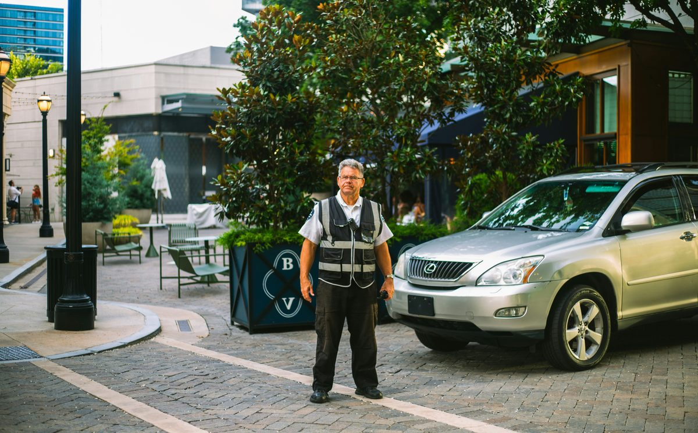

The 30-day problem: how parking operators turn a cancelable contract into an embedded one.
Most parking management contracts run one to three years and let the client walk on 30 days' notice. Adding onsite transit changes the contract's length, its scope, and how hard it is to take away from you.
Most parking management contracts run one to three years. A lot of them let the client walk on 30 days' notice, no reason required.
That's not our characterization. It's the operators' own language. Standard Parking told the SEC its management contracts ran one to three years and that the client often kept the right to "terminate, without cause, on 30 days' notice." (Standard Parking 10-K, FY2006) Central Parking reported its renewal rate slipping from 95% to 91% over three fiscal years and warned that losing management contracts could hurt the business. (Central Parking S-4, 1998)
Those filings are old. The contract structure isn't. You can run a garage perfectly for ten years and still lose it to whoever bid two points lower on the fee this cycle.
Back in May we argued that parking operators are already running half a transit system and just need the vehicle for the other half. This is the follow-up, and it's about money. What does adding onsite transit do to the contract itself? To its length, its scope, and how hard it is to take away from you?
Why the contract is short in the first place
Nobody designed it this way on purpose. Management contracts got short and cancelable because, from the owner's chair, the service looked interchangeable. Collect the money. Staff the booth. Sweep the deck. Send the report. If every bidder delivers the same thing, the owner is right to shop on price.
And owners are being coached to do exactly that. One renewal guide aimed at property owners calls the renewal "one of the few moments when an owner holds all the leverage," then points out that most operators earn a spread on payroll and benefits, so the owner should ask who decided the garage needs that many people. (Vend) The hotel trade press is telling owners parking can clear 70–80% margins and that it's time to take a hard look at the asset. (Hotel Business)
So owners squeeze. Operators defend the fee. Working harder inside the same scope doesn't change that.
A different deliverable does.
What one transit line does to the whole contract
SP+ describes its management revenue as fees for a bundle: run the facility, plus accounting, equipment leasing, consulting, insurance. (SP Plus 10-K, FY2023) The bundle is where the margin is. It's also the difference between a management contract and a labor contract.
Onsite transit fits in that bundle, but it doesn't behave like the other lines.
For one, you already own all the inputs. The lot layout, the ingress and egress timing, the event calendar, the ADA request log, the crew. A tram loop from the far lots to the gate is built out of exactly that. A competitor bidding cold has none of it.
It also stretches the planning horizon. A garage can be re-staffed in a month. A route plan built around a full season, with stop locations, posted schedules, load-zone geometry, and trained drivers, is not something an owner wants to re-procure on 30 days' notice. Scope that takes months to get right gets renewed, not rebid.
And it puts you in the guest experience. Parking gets judged by the invoice. Transit gets judged by the fan, the patient, the attendee. Once you own the ride from the car to the door, the client conversation stops being "what does this cost" and starts being "how did it go." You're the one with the answer.
Last thing. It's revenue that isn't payroll spread. Tram exteriors sell to sponsors. ADA transit that meets demand shrinks the complaint log and the liability. Faster egress means shorter staff hours. Every one of those is a number you can put in a quarterly review that nobody else at the table can produce.
The RFPs are already asking
Read how buyers write these.
Orange County put "the parking facilities, valet parking and shuttle services at John Wayne Airport" into a single operating agreement. One contract, one operator, cars and people together. (Orange County / JWA) Orlando International bid out shuttle management as its own scope, contractor supplies the people, the supervision, and the vehicles. (Greater Orlando Aviation Authority)
My favorite is a regional airport's parking RFP addendum. A bidder asked whether shuttles were required. The answer: not today, but as the far end of the surface lot fills up, the airport would consider "customer friendly solutions." A few questions earlier, the same airport said ground transportation wasn't required but the vendor could propose it. (Columbia Metropolitan Airport)
That's a buyer who knows the walk is getting longer, doesn't have a line item for it yet, and is openly inviting someone to write one. Show up to that renewal with a priced, staffed, scheduled answer and you're no longer competing on the management fee.
Some regional operators have caught on. Cornerstone Parking Group now sells "event transportation platforms" as a service line: ingress and egress design, load-zone processes, shuttle staffing and leadership. (Cornerstone Parking Group) The category is real. What's under it is the question.
Three ways the contract gets bigger
Worth being concrete about this, because "scope" gets used loosely.
Mid-term, by amendment. This is the one most operators overlook. You don't have to wait for renewal. If you're the incumbent and the client is fielding complaints about the walk from Lot F, you can bring a transit scope to them next quarter as a change order or an addendum. The airport above said it plainly: not required, but you can propose it. Most clients would rather add a line to a contract they already have than run a new procurement. Adding scope mid-term also resets the relationship. You went from vendor to the person who solved a problem they hadn't asked anyone to solve.
At renewal, as a bundle. When the contract does come up, transit is the thing that changes the shape of your proposal. The client is no longer comparing your management fee to three others. They're comparing a parking bid to a parking-plus-mobility bid, and only one of those has a route plan built from their own data. That's also when you have the most room to ask for a longer term, because you're proposing something that takes a season to stand up.
In new bids, as the differentiator. When you're the challenger, transit is how you get out of the fee comparison. The incumbent has the site knowledge. You don't. But if the RFP says "customer friendly solutions will be considered" and you're the only one who priced one, you've changed what the buyer is scoring.
Same service, three different entry points. The first one is available to you right now on every account you hold.
Holding a parking contract that comes up this cycle?
FlexTram partners with parking operators on equipment rental, long-term lease, full-service, and white-label arrangements. You keep the client, the contract, and the staff. We bring the vehicle and the route plan, built from your own site data.
The vehicle, quickly
We went deep on this last time, so the short version. The shuttle bus is built for the road between the remote lot and the edge of the property, and that's where it stops. The golf cart fits inside the property but holds four to six people and doesn't run as a system. The stretch in between, from the perimeter to the actual door, is what we call the inside mile. It's where the operator's service ends and the guest starts walking.
A 27-passenger tram with independently turning axles runs on pavement, gravel, grass, and interior campus paths. It loads at a stop, follows a route, keeps a schedule, and takes a wheelchair without any special arrangement. It's the vehicle that lets "shuttle services" in your RFP response mean the whole trip instead of the first two-thirds.
How the partnership actually works
This is the part that hits your P&L, so here's the plain version.
You keep the client. FlexTram doesn't contract with the venue, the hospital, or the airport. You hold the relationship, the master agreement, and the invoice. Transit is a line on your contract, not another vendor the client has to babysit.
You keep the staff. Drivers, supervisors, event leads are your people. We train them on the equipment and the route. No new division.
We bring the vehicle and the system. Equipment on rental or long-term lease, sized to the site. Route design built from your own ingress and egress data and event schedules: stop placement, headways, load-zone layout, ADA positioning, egress surge plans. We run it with you through the first deployments, then hand it off. Specify, operate, transition.
White-label if you want it. The trams carry your brand and the client sees one provider.
And the math tilts your way. You mark up something with real differentiation instead of a spread on wages. Sponsorship on the tram exteriors is yours to sell or hand to the client. When the contract comes up, you're defending a system the client would have to rebuild from nothing. Not a booth schedule.
We already work this way alongside parking operators at some of the largest events and facilities in the country. It's not a concept.
Two bids, same stadium
Picture it.
The first operator proposes parking management, traffic direction, and an ADA shuttle run with six golf carts. It's a fine proposal. It's also the same shape as the incumbent's, which means the decision comes down to fee.
The second proposes the same parking scope, plus a fixed tram loop from the two farthest lots to the main gates on a posted 8-minute headway. ADA boarding at every stop. A post-game egress pattern that clears the far lots 20 minutes faster. A sponsorship package on the tram exteriors that offsets some of the operating cost. The route plan is built from last season's ingress data, which the second operator has because they're the incumbent.
The first is a parking bid. The second is a mobility operation, and the venue can't buy it from anyone else in the room.
Now go three years out. The tram loop has a name fans use. The sponsor has renewed twice. The ADA complaint log is empty. The venue's own marketing mentions the ride from the lot. The 30-day clause is still in the contract. Nobody's going to use it.
Scope is what makes a contract stick
If you want longer terms, fewer rebids, and pricing that isn't benchmarked against the cheapest booth staffer in your market, there's really one move. Put something in the contract the client can't get elsewhere and wouldn't want to rebuild.
Onsite transit is that. It uses everything you already have, the site knowledge, the crew, the relationship, the calendar, and adds the one piece that's been missing.
The way to stop being a 30-day contract is to run something that takes longer than 30 days to replace.
— The FlexTram Team
Frequently asked questions
Why are parking management contracts so easy to cancel?
Because from the owner's side the service looks interchangeable. Collect the money, staff the booth, sweep the deck, send the report. Standard Parking told the SEC its management contracts typically ran one to three years and that the client often reserved the right to terminate without cause on 30 days' notice. Central Parking reported its management-contract renewal rate slipping from 95.0% to 91.1% across three fiscal years. When every bidder delivers the same scope, the owner is right to shop on the management fee, and the contract structure reflects that.
How does adding onsite transit change a parking management contract?
Three ways. It uses inputs only the incumbent has: lot layout, ingress and egress timing, the event calendar, the ADA request log, and the crew, so a competitor bidding cold can't replicate it. It stretches the planning horizon, because a route plan with stop locations, posted schedules, load-zone geometry, and trained drivers takes a season to get right and isn't something an owner wants to re-procure on 30 days' notice. And it moves the operator into the guest experience, so the client conversation shifts from what it costs to how it went. Scope that takes months to build gets renewed, not rebid.
Do I have to wait for renewal to add transit to an existing parking contract?
No, and mid-term is the entry point most operators overlook. If you're the incumbent and the client is fielding complaints about the walk from the far lot, you can bring a transit scope to them next quarter as a change order or addendum. Most clients would rather add a line to a contract they already hold than run a new procurement. Airport RFP language shows buyers openly inviting this: one regional airport told bidders shuttle service wasn't required today but that as the far end of the surface lot fills up, customer-friendly solutions would be considered, and that the vendor could propose ground transportation even though it wasn't in the RFP.
How does a FlexTram partnership work for a parking operator?
The operator keeps the client, the master agreement, the invoice, and the staff. FlexTram does not contract with the venue, hospital, or airport. Transit is a line on the operator's contract, not another vendor the client has to manage. FlexTram supplies the vehicles on rental or long-term lease, designs the route from the operator's own ingress and egress data and event schedules (stop placement, headways, load-zone layout, ADA positioning, egress surge plans), trains the operator's drivers and supervisors, runs the first deployments alongside them, and then hands off. White-label is available, so the trams carry the operator's brand and the client sees one provider.
What revenue does onsite transit add beyond the management fee?
Revenue that isn't a spread on payroll. Tram exteriors sell to sponsors, and the operator can keep that inventory or hand it to the client. ADA transit that actually meets demand shrinks the complaint log and the liability exposure. Faster egress shortens staff hours. Each of those is a number the operator can put in a quarterly review that no other bidder at the table can produce, which is what moves the pricing conversation off the cheapest booth staffer in the market.
Related reading
Put something in the contract they can't rebid.
FlexTram partners with parking operators, facility management companies, and mobility providers on equipment rental, long-term lease, full-service, and white-label arrangements for venues, stadiums, airports, hospitals, campuses, and convention centers. You keep the client. We bring the vehicle and the system.